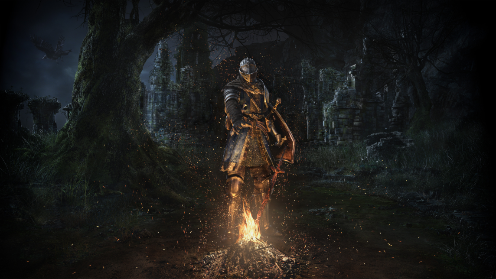
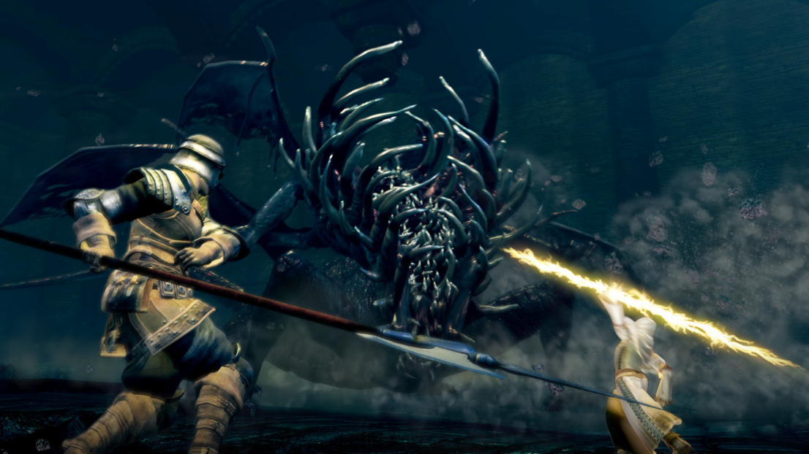
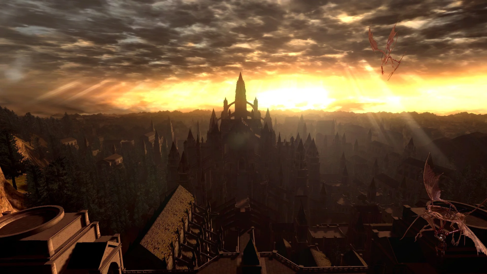
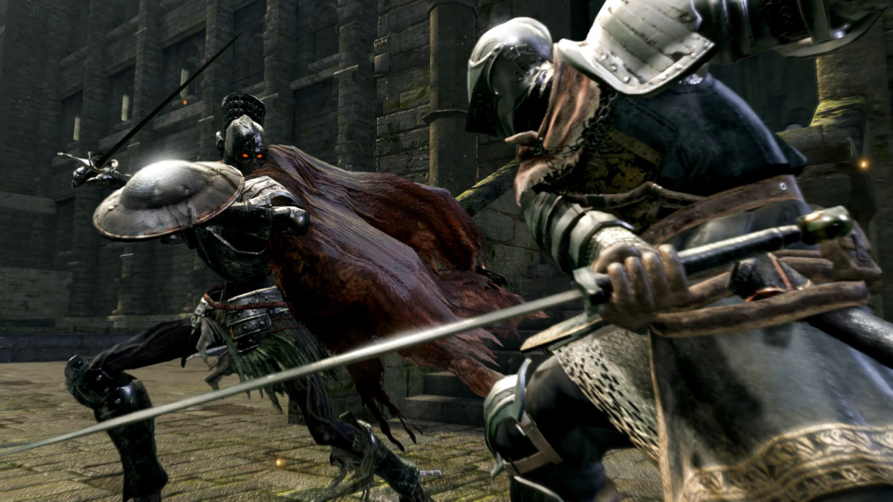
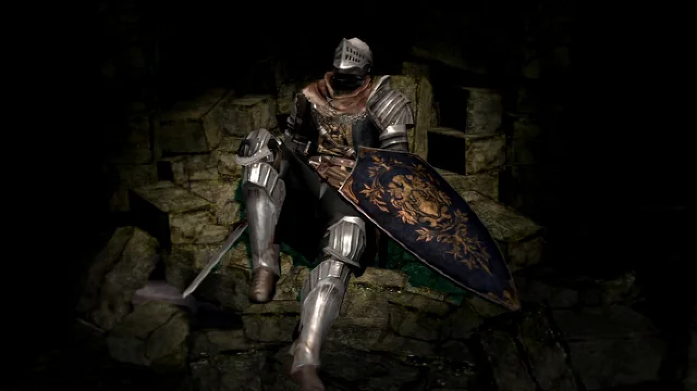
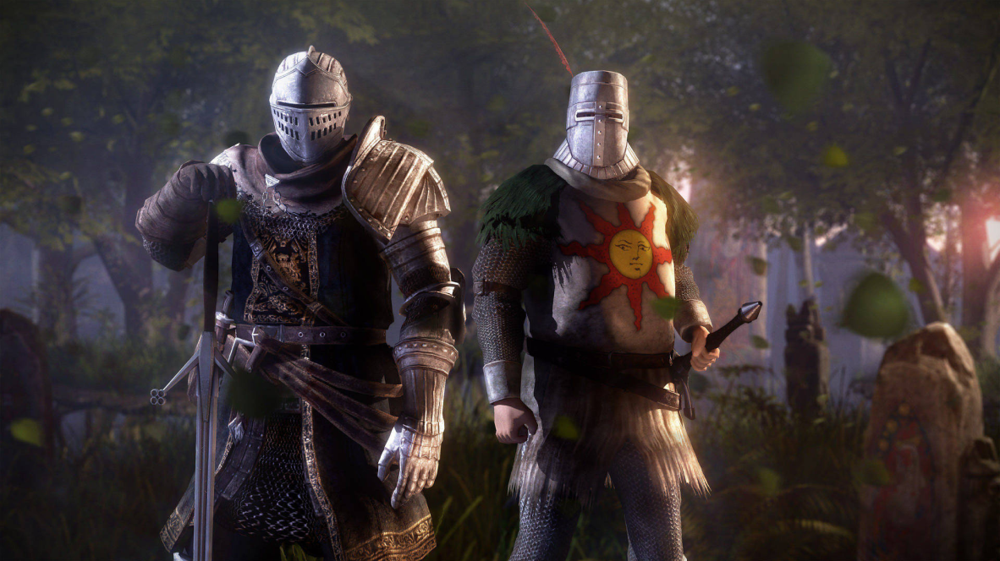
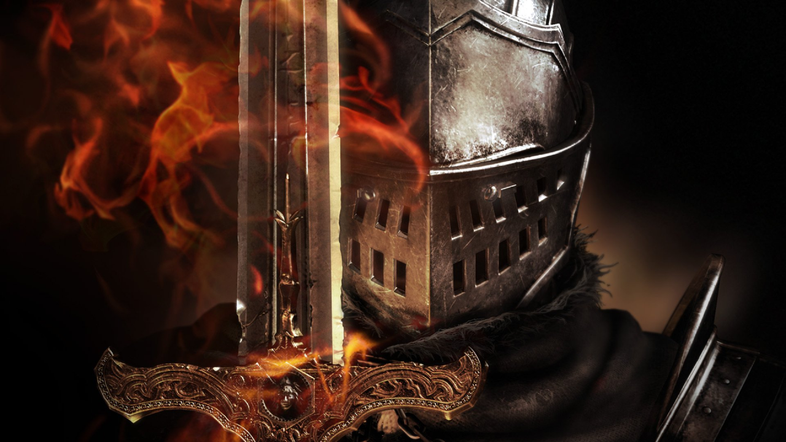

Dark Souls I
Dark Souls I é um jogo eletrônico do gênero RPG de ação produzido e desenvolvido pela empresa japonesa FromSoftware, e publicado pela Namco Bandai Games. O jogo é um sucessor espiritual de Demon's Souls e o segundo título da série Dark Souls. O enredo de Dark Souls se passa no reino fictício de Lordran, onde os jogadores assumem o papel de um personagem morto-vivo amaldiçoado que inicia uma peregrinação para descobrir o destino de sua espécie. Um relançamento para Microsoft Windows foi realizado em agosto de 2012, com conteúdos adicionais não presentes em suas versões originais.

jogabilidade
O sistema de jogabilidade apresenta-se em terceira pessoa e com foco em combates estratégicos e dinâmicos, inseridos em uma íngreme curva de dificuldade, característica mais marcante da série. O sistema de progressão baseia-se na tradicional progressão de atributos, que variam desde força à inteligência, estamina e fé, dentre outros.
Em sua jornada, o jogador encontrará ambientes diversos, como masmorras, fortalezas, cemitérios, lugares fantásticos, complementados por um game design circular, com a interconexão das mais diversas áreas em pontos específicos da narrativa. O sistema online preza pela interação entre jogadores, seja através de dicas in-game sobre os desafios existentes, combate entre jogadores e cooperação para completar determinados pontos do game.

O Design de Mundo
A exploração em Dark Souls não é linear, mas sim uma descoberta constante de como o mundo se dobra sobre si mesmo. O mapa é construído verticalmente, conectando calabouços profundos a castelos nas alturas através de atalhos engenhosos. Essa arquitetura transforma o mapa em um personagem vivo, onde a sensação de alívio ao encontrar um elevador que te leva de volta a uma zona segura é tão recompensadora quanto derrotar um inimigo poderoso.

O Combate
Diferente de jogos de ação frenética, aqui cada golpe deve ser calculado. O combate é um diálogo de paciência e observação, onde a barra de energia (stamina) dita o ritmo de tudo o que você faz.
Atacar sem critério, esquivar na hora errada ou manter o escudo levantado o tempo todo pode levar à exaustão e à morte rápida. O domínio do jogo vem da compreensão do peso dos seus equipamentos e do tempo de resposta de cada arma.

O Ciclo de Aprendizado
A morte é o pilar central da progressão. Em vez de ser um sinal de falha, ela serve como uma ferramenta de ensino que força o jogador a memorizar padrões de inimigos e perigos do cenário. O sistema de Almas, que funcionam simultaneamente como pontos de experiência e moeda, cria uma aposta constante: ao morrer, você tem apenas uma chance de recuperar seu progresso acumulado, o que injeta uma dose pesada de tensão em cada nova jornada.

A Cooperação Assíncrona
A solidão de Lordran é quebrada por um sistema de multiplayer único que integra a narrativa ao gameplay. Através de mensagens deixadas no chão, fantasmas de outros jogadores cruzando seu caminho e a possibilidade de invocar aliados ou ser invadido por inimigos reais, o jogo cria uma sensação de "comunidade de sofredores". Você sente que, embora sua jornada seja solitária, existem outros guerreiros enfrentando os mesmos desafios em realidades paralelas.

A Narrativa Silenciosa
O jogo respeita a inteligência do jogador ao não entregar a história de bandeja. A trama é contada de forma fragmentada, escondida em descrições de itens, na arquitetura das ruínas e em diálogos vagos com NPCs melancólicos. Cabe ao jogador atuar como um arqueólogo, ligando os pontos para entender a queda dos deuses e o estado deplorável do mundo, o que torna a imersão muito mais pessoal e profunda.
